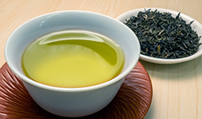

お茶のはじまり

飲茶の起源は定かではありませんが、約5,000年前に中国の農業の神様『神農』がお茶を薬として広めたのが始まりといわれています。
世界のお茶の生産量
現在、世界の茶生産量の約6割が紅茶、約3割が緑茶と推計され、特に近年は中国を中心に緑茶の生産量が拡大傾向にあります。
主要生産国の推移をみると、トップ中国の2018年茶生産量は前年から4.7%増の261万6000t。2009年比では93%増と大きく拡大し、これが生産量全体を押し上げた。2位インドは1.2%増の133万8630t(09年比36.7%増)。続くケニアは12%増の49万2999t(56.9%増)、スリランカは2.3%減の30万4006t(4.9%増)、そして日本は約８万tで11位です。
今後も世界的に茶の需要は拡大するものと見られ、中国とインド、さらにケニアを中心に生産量が増える見通しです。
参照：全国お茶組合
インフォメーション
- 2019年1月10日：
- お茶の常識ページの効果に【フッ素】を追加しました。
- 2018年9月25日：
- 当サイトがリニューアルしました。今後ともよろしくお願いいたします。